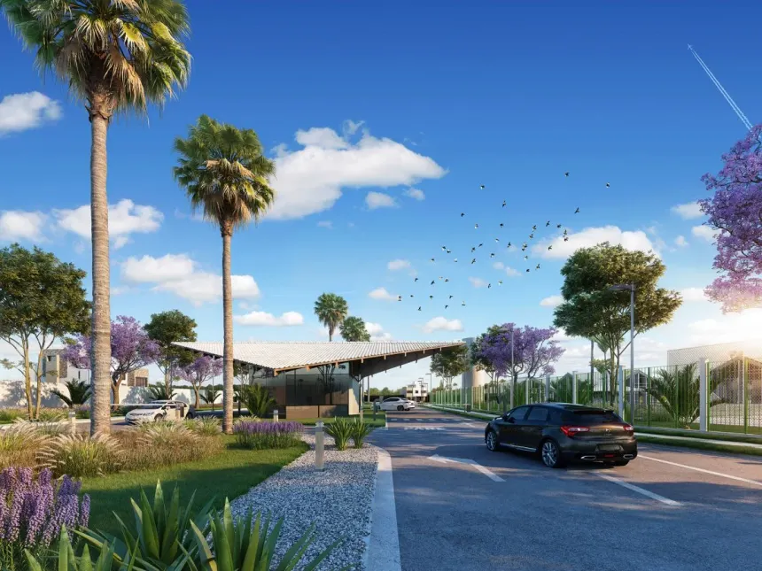

Aldeias
do Cerrado
Um novo conceito de viver bem
5% de entrada · até 240 meses · 0,2% ao mês
Mais que condomínios, uma filosofia de vida
Cada residencial foi concebido com identidade própria, integrando a flora típica do cerrado à arquitetura contemporânea.

Jacarandás
Harmonia perfeita entre arquitetura contemporânea e preservação ambiental. Lotes amplos com infraestrutura completa de lazer e segurança.
- Clube privativo exclusivo
- Portaria blindada 24h
- Fiação subterrânea

Sucupiras
Privacidade e exclusividade em um cenário deslumbrante. Projetado para quem busca tranquilidade sem abrir mão da conveniência urbana.
- Trilhas ecológicas integradas
- Espaço gourmet premium
- Quadras de tênis e poliesportivas
Explore o Aldeias do Cerrado
Navegue pelas fotos ou mergulhe no tour virtual 360° do complexo.


Localização
- BR-251 e DF-140 — Jardim Botânico
- 18 km da Ponte JK
- Hospitais, escolas e shopping próximos
- 280 mil m² de preservação permanente
A poucos minutos
do coração
de Brasília.
BR-251 com DF-140
Jardim Botânico — Brasília, DF
Famílias que encontraram seu lar
"Sempre quis morar próximo à natureza sem perder a praticidade de Brasília. O Aldeias do Cerrado foi a escolha certa para a nossa família."

"A transparência da Terracap e o processo facilitado foram decisivos. Em poucos meses meu lote estava regularizado e com toda documentação em mãos."
"Investi pensando na valorização. Em dois anos o m² da região subiu consideravelmente — foi a melhor decisão financeira que tomei."
Projeto de Casa Padrão Pré-Aprovado
Além dos benefícios de viver em harmonia com a natureza e segurança que o Residencial das Sucupiras oferece, adquirindo a sua unidade, você já terá à sua disposição um projeto pré-aprovado de construção para uma casa padrão, com área construída de 153 m², que conta os seguintes ambientes:
- Área de serviço
- Cozinha
- Corredor
- Despensa
- Garagem
- Lavabo
- Sala de estar
- Sala de jantar
- Varanda
- Três quartos, sendo um tipo suíte
- "WC"
- "WC" de empregada


Como comprar
Processo transparente e facilitado, com condições especiais para adquirir seu lote diretamente com a Terracap.
Consulte os editais
Acesse o portal de compras online da Terracap e confira os lotes disponíveis no Aldeias do Cerrado, com plantas e condições detalhadas.
Acessar portal →Participe da licitação
As aquisições ocorrem por licitação pública online ou leilão presencial. Solicite inclusão nos próximos editais pelo canal GEATE da Terracap.
Serviços online →Assine o contrato
Com a proposta aprovada, assine o contrato com a Terracap e obtenha toda a documentação do imóvel de forma segura e regularizada.
Ver documentação →Construa seu lar
Seu lote conta com projeto de casa padrão pré-aprovado de 153 m² — 3 quartos, suíte, garagem — para agilizar sua construção.
Ver residenciais →Dúvidas? Ligue (61) 3350-2222 · Seg–Sex, 7h–19h · ou acesse a central de atendimento.
Explore os 15 residenciais
Passe o mouse sobre cada residencial no masterplan para conhecê-lo.
Andamento das obras
Acompanhe a evolução de cada etapa do complexo Aldeias do Cerrado. Atualizado mensalmente pela equipe da Terracap.

Registro fotográfico de Abril de 2026.

Registro fotográfico de Maio de 2026.

Registro fotográfico de Junho de 2026.

Registro fotográfico desta etapa será publicado em breve.

Registro fotográfico desta etapa será publicado em breve.

Registro fotográfico desta etapa será publicado em breve.
Área do cliente
Acesse de forma organizada todos os documentos relativos ao seu imóvel ou consulte editais comerciais.
Área de documentos
Escrituras, plantas, comprovantes e manuais do proprietário. Histórico completo da sua relação com o empreendimento.
Acessar documentos →Área comercial
Propostas, contratos, tabela de preços e condições de pagamento. Acompanhe sua negociação com a Terracap.
Acessar área comercial →Contato e atendimento
Nossa equipe está pronta para tirar todas as suas dúvidas sobre os residenciais, condições de compra e andamento das obras.
-
SAC Terracap(61) 3350-2222 · Seg–Sex, 7h–19h
-
E-mailsac@terracap.df.gov.br
-
OuvidoriaLigue 162 · atendimento gratuito
-
Sede TerracapSAM, Ed. Sede Terracap, Asa Norte, Brasília – DF